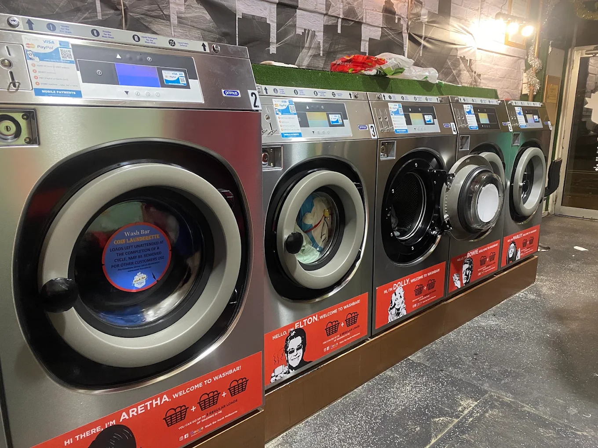
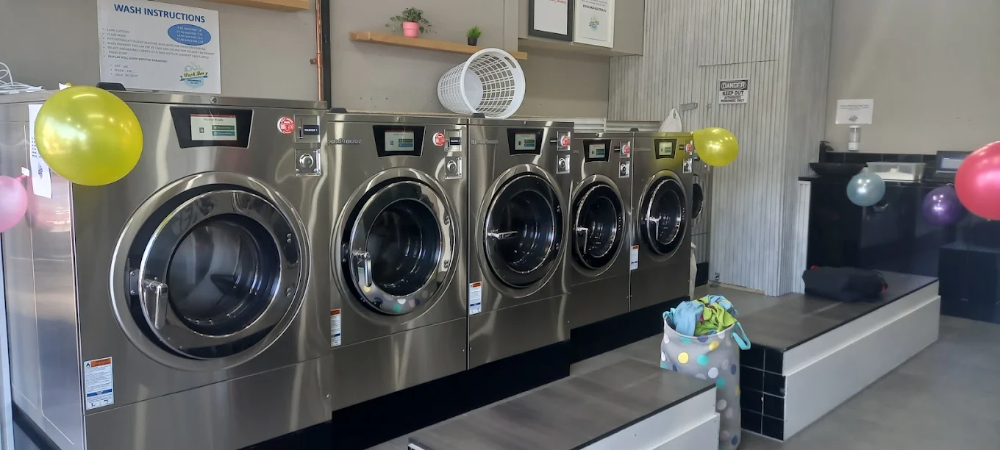
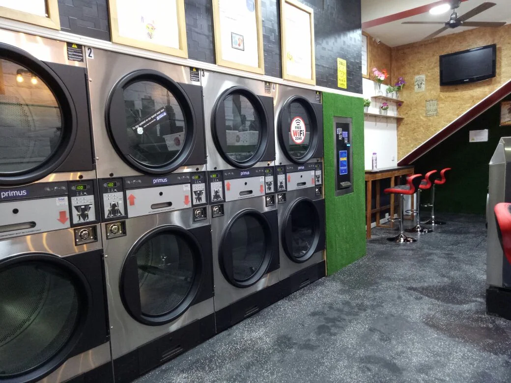

Laundry Care
How to remove 7 common laundry stains
A care-label-first guide to treating wine, coffee, grease, grass, blood, sweat and makeup marks.
Read the common stain guideLaundry advice & guides
Practical help for everyday laundry, choosing a Wash Bar service and keeping business laundry moving.

A care-label-first guide to treating wine, coffee, grease, grass, blood, sweat and makeup marks.
Read the common stain guide
Compare control, booking and time involvement to choose the option that fits your load.
Compare the two laundry options
Plan spare linen, repeatable routines, batching and backup capacity around guest changeovers.
Read the Airbnb turnover guide
A flexible schedule for sheets, towels, pillowcases, gym clothes, bath mats and bulky bedding.
See the practical washing schedule